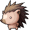

Lv. 41 · #4230501
호저
하늘숲에만 서식하는 고슴도치의 일종이다. 메이플 월드의 지하세계를 여행하던 두더지 일족의 일부가 무릉에 뿌리를 내리며 번식하게 되었다고 한다. 처음에는 많지 않은 수였지만, 점차 늘어나 지금은 별다람쥐와 도토리를 사이에 둔 피 튀기는 일전을 벌이고 있다고 한다.
스탯
레벨 41- HP
- 2,000
- MP
- 150
- EXP
- 99
- 넉백 가능 데미지
- 150+
- 물리 데미지
- 125
- 마법 데미지
- 0
- 물리 방어력
- 120
- 마법 방어력
- 150
- 속도
- -20
- 41레벨 에서의 필요 명중
- 54.99
- 메소
- 307.5
- 속성관계
- 미기재
- 체경비
- 20.20
- 형태
- 동물형
출현 지역
출현 맵 3개맵 이름을 누르면 메이플노트의 맵 정보가 열립니다.
드롭 테이블
전체 22개| 아이템 | 아이템 ID | 드롭 확률 |
|---|---|---|
| 골무 | 4000277 | 50% |
| 하얀 포션 | 2000002 | 1% |
| 파란 포션 | 2000003 | 1% |
| 활전용 화살 | 2060000 | 0.8% |
| 석궁전용 화살 | 2061000 | 0.8% |
| 강철의 원석 | 4010001 | 0.08% |
| 민첩성의 크리스탈 원석 | 4004002 | 0.08% |
| 마법의 가루(초록) | 4007003 | 0.03% |
| 마법의 가루(갈색) | 4007000 | 0.03% |
| 스태프 제작의 촉진제 | 4130011 | 0.01% |
| 폴암 제작의 촉진제 | 4130009 | 0.01% |
| 장갑 제작의 촉진제 | 4130000 | 0.01% |
| 자월 바지 | 1061076 | 0.01% |
| 다크 문라이트 | 1051026 | 0.01% |
| 블루 하프슈즈 | 1072110 | 0.01% |
| 완드 제작의 촉진제 | 4130010 | 0.008% |
| 백의 주문서 1% | 2049000 | 0.007% |
| 오렌지 골든서클릿 | 1002217 | 0.005% |
| 펜지 이어링 | 1032018 | 0.005% |
| 스틸 슬레인 | 1472018 | 0.005% |
| 방패 방어력 주문서 60% | 2040901 | 0.004% |
| 브라운 레더크라그 | 1072300 | 0.0016% |
조건에 맞는 드롭 아이템이 없습니다.
확률은 메이플노트에 게시된 값입니다. 아이템 이름을 누르면 원본 아이템 정보가 열립니다. 과거 버전 데이터이므로 실제 메이플랜드와 다를 수 있습니다.